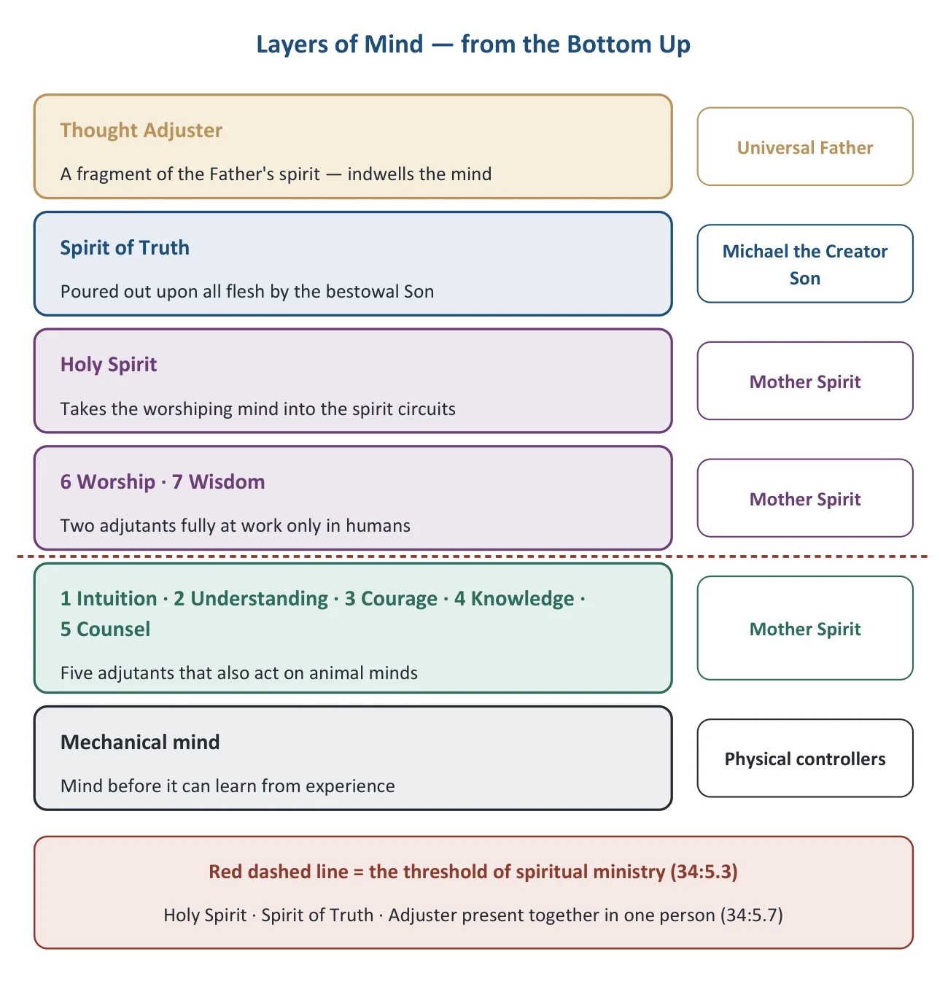
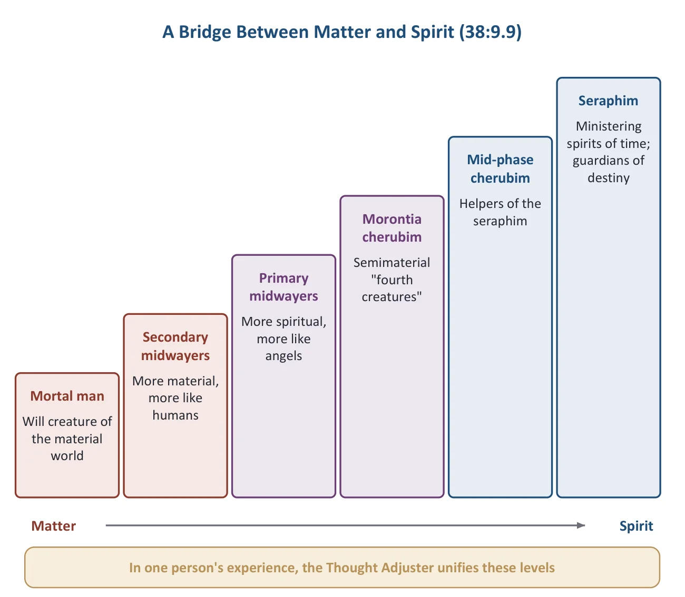

Nebadon, nuestro universo natal
Lectura: Documentos 32–34 · Documento 35:0–4, 8 · Documento 36 · Documento 38 · Documento 39:4, 8 · Documento 40:5–6 (documentos 41–42, ligeramente)

La segunda parte aparta nuestra mirada del centro del universo y la dirige hacia nuestro propio vecindario. El libro de Urantia describe Nebadon, el universo local en que vivimos, como un hogar que el Hijo Creador Micael y el Espíritu Materno del Universo prepararon durante más de mil millones de años y construyeron juntos. En este hogar el Padre Universal gobierna por medio de su Hijo, mientras que el Espíritu Materno atiende nuestra mente por medio de los siete espíritus ayudantes de la mente y del Espíritu Santo. Hijos como los Melquisedek y los Portadores de Vida, junto con los ángeles seráficos, forman una sola familia que ayuda a crecer a los mortales. Esta semana conocemos la forma de este hogar y, uno por uno, a los miembros de su familia.
Relato inicial
Meses antes de que nazca un bebé, los padres le preparan una habitación. Pintan las paredes, traen una cunita y cuelgan cortinas. El bebé abre los ojos allí sin saber nada de cómo se preparó la habitación, y solo mucho después, ya adulto, comprende la espera que hubo detrás.
La historia que cuenta la segunda parte de El libro de Urantia se parece mucho a esto. Durante las tres últimas semanas contemplamos el gran cuadro: el Paraíso, Havona y los siete superuniversos. Ahora, dentro de ese cuadro, volvemos al hogar donde nacimos. Este hogar tiene un nombre, Nebadon. Tiene un constructor y tiene una familia.
Aparecerán muchos nombres desconocidos, pero no hace falta memorizarlos. Basta con percibir quién construyó este hogar y quién nos cuida aquí.
1. Cómo nace un universo
Cien constelaciones, diez mil sistemas
En la semana 3 seguimos nuestra dirección cósmica desde un planeta hasta un superuniverso. En esa dirección, el «universo local» es la unidad que un Hijo Creador construye y gobierna. El documento 32 da su tamaño en su primerísima oración.
UN UNIVERSO local es la obra individual de un Hijo Creador de la orden paradisiaca de los Micaeles. Reúne cien constelaciones, cada una de ellas compuesta por cien sistemas de mundos habitados. Con el tiempo, cada sistema contendrá aproximadamente mil esferas habitadas.32:0.1
Cien por cien por mil: la meta es diez millones de mundos habitados. Nebadon es un universo joven que todavía no ha llegado a la mitad.
En Nebadon la organización de las residencias planetarias sigue su curso. Este universo es en realidad un grupo joven entre los reinos estelares y planetarios de Orvonton. Según el último registro había 3.840.101 planetas habitados en Nebadon; y Satania, que es el sistema local de vuestro mundo, es relativamente típico respecto a otros sistemas.32:2.9
Nuestro sistema, Satania, tiene 619 mundos habitados, y Urantia es uno de ellos.
Mil millones de años de preparación
La construcción empieza mucho antes de que llegue el Hijo Creador. Los organizadores de la fuerza del Paraíso ponen en movimiento las nebulosas, y los directores del poder del superuniverso reúnen esa energía y le dan forma de soles y planetas.
En la creación de un universo local estos directores del poder funcionan solos en la fase prematerial y en las fases posteriores a la fuerza. Para un Hijo Creador no existe ninguna oportunidad de comenzar la organización del universo hasta que los directores del poder hayan efectuado la movilización de las energías espaciales suficientemente como para proveer un cimiento material —soles verdaderos y esferas materiales— para el universo emergente.32:1.2
Primero se prepara el terreno. Solo cuando está listo llega el dueño de la casa.
Cuando la energía-materia ha alcanzado cierta etapa en la materialización de la masa, aparece en escena un Hijo Creador Paradisiaco, acompañado por una Hija Creativa del Espíritu Infinito. Simultáneamente con la llegada del Hijo Creador comienzan las obras para construir la esfera arquitectónica destinada a ser el mundo sede central del proyectado universo local.32:1.5
La «Hija Creativa del Espíritu Infinito» es la que más tarde llega a ser el Espíritu Materno del Universo. La primera obra de ambos fue construir la capital, Salvington.
Desde el momento de las acciones iniciales de los centros del poder y los controladores físicos hasta la llegada del personal vivo a las esferas completadas de Salvington, mediaron un poco más de mil millones de años de vuestro tiempo actual planetario.32:2.3
Después vienen cien sedes de constelación y diez mil sedes de sistema; se da existencia a Hijos y ángeles y se establece un gobierno. Los seres humanos llegan al final mismo de esta larga secuencia.
Y luego, cuando tal universo ha sido tan completamente organizado y plenamente tripulado, el Hijo Creador entra en la propuesta del Padre para crear al hombre mortal a su imagen divina.32:2.8

¿Por qué no construirlo perfecto desde el principio?
Havona fue perfecto desde el principio, pero un universo local llega a ser perfecto poco a poco, evolucionando. ¿Por qué un camino tan largo?
En todo esto se ve la sabiduría de los Creadores. Sería igualmente fácil para el Padre Universal hacer de todos los mortales seres perfectos, impartir perfección con su palabra divina. Pero eso los privaría de la maravillosa experiencia de la aventura y capacitación asociadas con el prolongado y gradual ascenso hacia el interior, una experiencia reservada tan sólo para aquellos que tienen la buena fortuna de comenzar en lo más bajo de la existencia viviente.32:3.11
Empezar desde lo más bajo se llama buena fortuna. Solo quien ha subido una escalera de principio a fin conoce cada peldaño. Nuestro torpe comienzo es parte del plan.
Existe un gran y glorioso propósito en la marcha de los universos a través del espacio. Todas vuestras luchas mortales no son en vano. Todos nosotros somos parte de un plan inmenso, una empresa gigantesca, y es la vastedad de esa empresa la que convierte en imposible poder ver mucho de ello en un determinado tiempo y durante una vida cualquiera. Todos formamos parte de un proyecto eterno que los Dioses están supervisando y efectuando.32:5.1
Palabras nuevas
- Nebadon: nombre del universo local al que pertenecemos; un universo joven que crece hacia la meta de diez millones de mundos habitados.
- Salvington: capital de Nebadon, una esfera arquitectónica donde Micael y el Espíritu Materno tienen su sede.
- Directores del poder: seres del superuniverso que reúnen las energías del espacio y les dan forma de soles y planetas.
- Constelaciones y sistemas: divisiones administrativas de un universo local. Cada constelación abarca cien sistemas, y cada sistema unos mil mundos habitados.
2. Micael, el Hijo Creador, y el Espíritu Materno
El padre de nuestro universo
¿Quién es el señor de esta gran casa? El documento 32 da un nombre sorprendente.
Urantia pertenece a un universo local cuyo soberano es el Dios-hombre de Nebadon, Jesús de Nazaret y Micael de Salvington. Y todos los planes de Micael para este universo local, los aprobó plenamente la Trinidad del Paraíso antes de que se embarcara en la suprema aventura del espacio.32:0.3
El Creador que hizo nuestro universo vino a este planeta y vivió como hombre. Es Jesús de Nazaret (semana 11). ¿Qué es Micael para nosotros?
Para nuestro universo y todos sus mundos habitados, para todos los fines y propósitos prácticos, el Hijo Soberano es Dios. Personifica a todas las Deidades del Paraíso a las que los mortales evolutivos pueden comprender con discernimiento. Este Hijo y su Espíritu asociado son vuestros padres creadores.33:1.4
La expresión «para todos los fines y propósitos prácticos» merece atención. El documento 33 afirma claramente que Micael no es el Hijo Eterno del Paraíso ni miembro de la Trinidad (33:1.2). Lo que se quiere decir es que todos los aspectos de Dios que somos capaces de reconocer están reunidos en él.
El Padre obra por medio del Hijo
Entonces, ¿dónde está el Padre Universal? El párrafo inicial del documento 33 expone el principio de la administración del universo local.
AUNQUE el Padre Universal indudablemente gobierna sobre su vasta creación, al mismo tiempo funciona en la administración de un universo local a través de la persona del Hijo Creador. El Padre no actúa personalmente ni de ninguna otra manera en los asuntos administrativos de un universo local. Se confían estos asuntos al Hijo Creador, al Espíritu Materno del universo local y a los múltiples hijos de ellos.33:0.1
El Padre delega esta obra por generosidad, no por indiferencia. El documento 32 dice: «Dios no es una personalidad egocéntrica» (32:4.10). Delegarla tampoco significa que se mantenga a distancia.
Durante la larga lucha para alcanzar al Padre, la más segura salvaguarda para la criatura, en el período en que las condiciones inherentes hacen imposible tal logro, es aferrarse tenazmente al hecho-verdad de la presencia del Padre en sus Hijos. Literal y figurativamente, espiritual y personalmente, el Padre y los Hijos son uno solo. Es un hecho: el que ha visto a un Hijo Creador, ha visto al Padre.32:3.6
Y el Padre no obra solo por medio de su Hijo. Dentro de cada persona está presente él mismo.
En las criaturas mortales volitivas el Padre está realmente presente en el Ajustador residente, un fragmento de su espíritu prepersonal. El Padre también es la fuente de la personalidad de tales criaturas mortales volitivas.32:4.5
Junto a la Biblia
Jesús le dijo a Felipe: «el que me ha visto, ha visto al Padre» (Juan 14:9). Después de la resurrección declaró: «Toda potestad me es dada en el cielo y en la tierra» (Mateo 28:18). El libro de Urantia lee ambos dichos desde el punto de vista del Hijo Creador. El Padre está presente en el Hijo (32:3.6), y solo después de que el Espíritu Materno prometió su subordinación a Micael fue entregado en sus manos «todo el poder en el cielo y en la tierra» (33:3.5).
La madre de nuestro universo
Al lado de Micael está una compañera que eligió libremente este camino desde el principio.
El Espíritu Materno del Universo en Salvington, la asociada de Micael en el control y la administración de Nebadon, pertenece al sexto grupo de los Espíritus Supremos, siendo la número 611.121 de esa orden. Voluntariamente ella acompañó a Micael al liberarse él de las obligaciones del Paraíso y desde entonces ha actuado con él en la creación y gobierno de su universo.33:3.2
Al Espíritu Materno también se la llama la Ministra Divina. Cuando Micael regresó tras terminar su último autootorgamiento en este mundo, ella reconoció al Hijo como soberano. Micael, a su vez, la elevó a cogobernante suya.
Así se emitió y publicó la «Proclamación de Igualdad» final. Aunque era el soberano de este universo local, el Hijo proclamó a los mundos el hecho de la igualdad del Espíritu con él en todas las dotes de personalidad y atributos de carácter divino. Y esto pasa a ser el modelo trascendental para la organización y gobierno de la familia, aún de las más bajas criaturas de los mundos del espacio.33:3.6
La manera en que estos dos se honran mutuamente es el modelo de toda familia.
El Hijo y el Espíritu presiden ahora el universo en forma muy similar a un padre y una madre que vigilan y asisten a su familia de hijos e hijas. No está completamente fuera de lugar referirse al Espíritu del Universo como al acompañante creativo del Hijo Creador y considerar a las criaturas de los reinos como sus hijos e hijas. O sea, una familia grande y gloriosa, que sin embargo exige responsabilidades incalculables y una interminable vigilancia.33:3.7
Nuestro universo no es una oficina de gobierno, sino un hogar donde los padres velan por sus hijos.
Aclarar un malentendido
Un malentendido común: como Dios ha confiado el universo local a su Hijo, el Padre Universal debe de estar descansando en algún lugar muy lejos de nosotros. Lo que dice El libro de Urantia: no debemos pensar que el Padre es silencioso o inactivo (32:4.1). En persona gobierna por medio de su Hijo, pero en la mente de sus hijos mortales está verdaderamente presente como el Ajustador residente (32:3.4, 32:4.5). Delega la administración, pero es el más cercano de todos a cada individuo.
3. Los espíritus que atienden la mente
Tres corrientes de espíritu
El Espíritu Materno cuida de modo especial la mente. El documento 34 dice que tres circuitos de espíritu fluyen por nuestro universo.
Hay tres circuitos de espíritu distintos en el universo local de Nebadon: 1. El espíritu del autootorgamiento del Hijo Creador, el Confortador, el Espíritu de la Verdad. 2. El circuito de espíritu de la Ministra Divina, el Espíritu Santo. 3. El circuito de inteligencia-ministerio de los siete espíritus ayudantes de la mente, que incluye sus más o menos unificadas actividades, aunque de funcionamiento diverso.34:4.1-4
El Espíritu de la Verdad procede de Micael, el Hijo; el Espíritu Santo y los siete espíritus ayudantes de la mente proceden del Espíritu Materno. En este libro, «Espíritu Santo» significa la presencia espiritual del Espíritu Materno del universo local.
Los siete espíritus ayudantes de la mente
En el nivel más bajo trabajan los siete espíritus ayudantes de la mente.
Los siete espíritus ayudantes de la mente son la creación de la Ministra Divina de un universo local. Estas mente-espíritus son similares en carácter pero diversas en poder, y todas comparten de la misma manera de la naturaleza del Espíritu del Universo, aunque difícilmente se les considera personalidades que sean separadas de su Madre Creativa. A los siete ayudantes se les ha dado los siguientes nombres: el espíritu de sabiduría, el espíritu de adoración, el espíritu de asesoramiento, el espíritu de conocimiento, el espíritu de valentía, el espíritu de comprensión, y el espíritu de intuición — o de percepción rápida.34:4.10
| Orden | Nombre | Qué hace | Ejemplo cotidiano |
|---|---|---|---|
| 1 | Intuición | Percepción rápida; el instinto de conservación | Retirar la mano de algo caliente |
| 2 | Comprensión | Relacionar ideas y juzgar con rapidez | Evaluar una situación y decidir al instante |
| 3 | Valor | Lealtad; la raíz de la firmeza moral | Hacer lo correcto a pesar del miedo |
| 4 | Conocimiento | Curiosidad y descubrimiento; el espíritu científico | Seguir una pregunta hasta el final |
| 5 | Consejo | El impulso social; la capacidad de colaborar | Conversar y cooperar con los vecinos |
| 6 | Adoración | El impulso religioso; la insignia de un candidato a tener alma | Inclinarse ante Alguien más grande que uno mismo |
| 7 | Sabiduría | Coordina la tarea de todos los ayudantes | Aprovechar la experiencia pasada para hallar el buen camino |
Estos espíritus actúan desde las formas de vida más primitivas.
Es la presencia de los siete espíritus ayudantes de la mente en los mundos primitivos lo que condiciona el curso de la evolución orgánica; eso explica por qué la evolución tiene un propósito determinado y no accidental.36:5.1
La mente cruza un umbral
Los cinco primeros espíritus actúan también en los animales. Lo que hace humano al ser humano son el sexto y el séptimo. El documento 36 presenta así el espíritu de adoración.
6. El espíritu de adoración — el impulso religioso, el primer impulso diferencial que separa a las criaturas de mente en las dos clases básicas de existencia mortal. El espíritu de adoración eternamente distingue al animal con él asociado, de las criaturas de dotación mental sin alma. La adoración es la insignia de la candidatura a la ascensión espiritual.36:5.11
Hace mucho tiempo, alguien se arrodilló por primera vez ante algo más grande que él. El documento 34 explica lo que ocurrió en ese momento.
El hombre mortal experimenta por primera vez el ministerio del Espíritu en conjunción con la mente cuando la mente puramente animal de las criaturas evolucionarias desarrolla la capacidad de recepción de los ayudantes de adoración y de sabiduría. Este ministerio del sexto y séptimo ayudantes indica que la evolución de la mente está cruzando el umbral del ministerio espiritual. E inmediatamente se incorporan estas mentes funcionales en adoración y sabiduría a los circuitos espirituales de la Ministra Divina.34:5.3
En el momento en que una mente se vuelve hacia la adoración, comienza el ministerio del Espíritu Santo. Esa persona puede entonces recibir un Ajustador, y una vez derramado el Espíritu de la Verdad, toda mente normal recibe uno (34:5.4).
La presencia del Espíritu Santo de la Hija del Universo del Espíritu Infinito, del Espíritu de la Verdad del Hijo del Universo del Hijo Eterno, y del Ajustador-espíritu del Padre del Paraíso en un mortal evolucionario o junto a él, denota simetría de ministerio y dote espirituales y condiciona a tal mortal para comprender conscientemente el fe-hecho de la filiación de Dios.34:5.7

El Espíritu que nunca impone
Sin embargo, dentro de nosotros siempre luchan dos fuerzas. El documento 34 no oculta este hecho.
En todo mortal existe una naturaleza dual: la herencia de tendencias animales y el impulso elevado de la dotación espiritual. Durante la corta vida que vosotros vivís en Urantia, estos dos impulsos diversos y opuestos, difícilmente pueden reconciliarse plenamente34:6.9
Cuando el corazón y la conducta tiran en direcciones distintas, eso no es un fracaso personal, sino la condición de todos nosotros. A nuestro lado, el Espíritu simplemente guía.
El Espíritu nunca impulsa, sólo guía. Si eres un aprendiz voluntarioso, si quieres lograr niveles espirituales y alcanzar las alturas divinas, si sinceramente deseas alcanzar el objetivo eterno, entonces el Espíritu divino te guiará suave y amorosamente por el camino de la filiación y el progreso espiritual.34:6.11
Cerca del final del documento 42 una oración resume esta relación en una sola imagen.
En un mundo material pensáis que el cuerpo tiene espíritu, pero nosotros consideramos que el espíritu tiene cuerpo. Los ojos materiales son verdaderamente las ventanas del alma nacida del espíritu. El espíritu es el arquitecto, la mente es el constructor, el cuerpo es el edificio material.42:12.12
El cuerpo que se ve en el espejo no es toda la persona. A quienes han emprendido este camino, el documento 34 les hace una promesa.
Habiendo comenzado el camino de la vida eterna, habiendo aceptado el deber y recibido tus órdenes de avanzar, no temas los peligros del olvido humano e inestabilidad mortal, no te preocupes por el temor al fracaso, o por la confusión que te deja perplejo, no vaciles ni interrogues tu estado y situación porque en las horas sombrías, en cada encrucijada de la lucha por progresar, el Espíritu de la Verdad siempre hablará, diciendo: «Éste es el camino».34:7.8
Palabras nuevas
- Espíritu Materno del Universo (Ministra Divina): la hija del Espíritu Infinito que crea y gobierna Nebadon junto con Micael.
- Siete espíritus ayudantes de la mente: siete circuitos por medio de los cuales el Espíritu Materno obra en el nivel de la mente, ayudando a sus capacidades básicas, desde la intuición hasta la sabiduría.
- Espíritu Santo: en este libro, la presencia espiritual del Espíritu Materno del universo local.
Junto a la Biblia
El libro del Apocalipsis dice: «siete lámparas de fuego estaban ardiendo delante del trono, las cuales son los siete Espíritus de Dios» (Apocalipsis 4:5). El documento 34 lo explica como una visión de los siete espíritus ayudantes de la mente (34:4.11). También cita las palabras de Pablo, «el fruto del Espíritu es: caridad, gozo, paz, tolerancia, benignidad, bondad, fe, mansedumbre, templanza» (Gálatas 5:22–23), como la señal de una vida guiada por el espíritu (34:6.13).
4. Los Hijos del universo local
Gabriel y la estructura del gobierno
El primer ser que Micael y el Espíritu Materno crearon juntos es la Brillante Estrella Matutina, Gabriel de Salvington. En cada universo local hay solo un ser así, y él lleva a cabo la administración efectiva.
Gabriel de Salvington es el jefe ejecutivo del universo de Nebadon y árbitro de todas las apelaciones ejecutivas respecto a su administración. Este ejecutivo del universo fue creado completamente dotado para su tarea, pero ha acumulado experiencia con el crecimiento y evolución de nuestra creación local.33:4.5
Por debajo de él gobiernan los Padres de la Constelación, los Soberanos de los Sistemas y los Príncipes Planetarios. Emanuel de Salvington, embajador de la Trinidad del Paraíso, da consejo solo cuando se le pide (33:5.2). Micael se dedica únicamente a la creación, el sostenimiento y el ministerio, y no participa personalmente en el juicio (33:7.1).
Aunque de cuando en cuando parezca en Urantia que las contiendas humanas se adjudican injustamente, en el universo prevalecen la justicia y la equidad divinas. Vosotros vivís en un universo bien ordenado, y podéis confiar en que, tarde o temprano, seréis tratados con justicia, aun con misericordia.33:7.8

Cuatro órdenes de Hijos
Después de Gabriel, Micael y el Espíritu Materno dieron existencia a muchas órdenes de Hijos. El documento 35 presenta cuatro de ellas.
Los tipos de Hijos a ser considerados tienen su origen en el universo local; descienden de un Hijo Creador Paradisiaco en variada asociación con el complementario Espíritu Materno del Universo. Las siguientes órdenes de filiación del universo local son mencionadas en estas narrativas: 1. Los Hijos Melquisedek. 2. Los Hijos Vorondadek. 3. Los Hijos Lanonandek. 4. Los Hijos Portadores de Vida.35:0.2-6
| Orden | Otros nombres · cargo principal | Qué hacen | Relación con Urantia |
|---|---|---|---|
| Melquisedek | Hijos mayores de la familia; Hijos para casos de emergencia | Dirigen las escuelas; acuden a ayudar en las crisis | Melquisedek de Salem, la tercera revelación |
| Vorondadek | Padres de la Constelación | Gobiernan constelaciones; gabinete consultivo de Micael | Los Altísimos de Edentia |
| Lanonandek | Soberanos de los Sistemas, Príncipes Planetarios | Gobiernan sistemas y planetas | La rebelión de Lucifer y Caligastia |
| Portador de Vida | Portadores de la vida | Diseñan, implantan y cuidan la vida | Implantaron la vida en los mares primitivos |
Los Melquisedek, los hijos mayores
Los Melquisedek son la primera orden de Hijos capaz de situarse a medio camino entre el cielo y la tierra y servir directamente a las razas evolucionarias. El documento 35 los compara con el hijo mayor de una familia.
La orden de filiación de los Melquisedek ocupa la posición, y asume la responsabilidad, del hijo primogénito en una familia numerosa. La mayor parte de su trabajo es regular y un tanto rutinario, pero buena parte del mismo es voluntario y completamente autoimpuesto. La mayoría de las asambleas especiales que, de vez en cuando, se reúnen en Salvington se convoca a pedido de los Melquisedek. Por iniciativa propia estos Hijos patrullan su universo nativo.35:2.3
Aquí está la imagen de un hijo mayor que cuida de los menores sin que se lo pidan. Su tarea principal es enseñar a los ascendentes, pero también tienen otro nombre.
En Edentia, vuestra sede central de la constelación, se los conoce como los Hijos para casos de emergencia. Están siempre listos a servir en todas las exigencias —físicas, intelectuales, o espirituales— ya sea en un planeta, en un sistema, en una constelación, o en el universo. Dondequiera y cuandoquiera se requiere ayuda especial, allí encontraréis a uno o más de los Hijos Melquisedek.35:4.2
Melquisedek de Salem, a quien conocimos en la semana 1, fue un Hijo de esta orden que vino en semejanza humana en un tiempo de crisis (35:4.5).
Cuanto más se acercan
Los Lanonandek son los Hijos que gobiernan los sistemas y los planetas. Acercarse más a los seres humanos trae consigo el mayor riesgo.
Puesto que los Lanonandek son una orden ligeramente más baja de filiación que los Melquisedek y los Vorondadek, son de una utilidad aun mayor en las unidades subordinadas del universo, ya que son capaces de acercarse más a las criaturas más bajas de las razas inteligentes. También corren un mayor peligro de descarriarse, de desviarse de la técnica aceptable del gobierno universal.35:8.15
Lucifer, que fue soberano de nuestro sistema, y Caligastia, que fue príncipe de nuestro planeta, pertenecían ambos a esta orden. La historia de su rebelión llega en la semana 7.
Los que implantan la vida
La cuarta orden, los Portadores de Vida, responde a una vieja pregunta sobre el origen de la vida.
LA VIDA no se origina espontáneamente. La vida es construida según planes formulados por los (no revelados) Arquitectos del Ser y aparece en los planetas habitados por importación directa o como resultado de las operaciones de los Portadores de Vida de los universos locales. Estos portadores de vida se cuentan entre los entes más interesantes y versátiles de la familia diversificada de los Hijos de los universos. A ellos se les ha confiado diseñar y llevar la vida que va a tomar la forma de las criaturas, a las esferas planetarias.36:0.1
Como un jardinero que se queda junto a las semillas que ha sembrado, los Portadores de Vida permanecen mucho tiempo después de implantar la vida para fomentar su crecimiento (36:0.1). La historia de la vida en Urantia continúa en la semana 8.
Palabras nuevas
- Brillante Estrella Matutina: el primer ser creado conjuntamente por el Hijo Creador y el Espíritu Materno, jefe ejecutivo de un universo local; en Nebadon, Gabriel de Salvington.
- Hijos Melquisedek: la orden de hijos mayores del universo local; dirigen la educación de los ascendentes e intervienen como «Hijos para casos de emergencia» en los mundos en crisis.
- Hijos Vorondadek y Lanonandek: Hijos del universo local que gobiernan las constelaciones (los Vorondadek) y los sistemas y planetas (los Lanonandek).
- Portadores de Vida: Hijos que diseñan la vida, la implantan en los planetas y cuidan su desarrollo.
5. Los ángeles, nuestros amigos invisibles
Hijas del Espíritu Materno
Mientras Micael daba existencia a los Hijos, el Espíritu Materno creó por sí sola a los ángeles. Los ángeles que ayudan más de cerca a los mortales en un universo local son los serafines. El documento 38 los describe así.
Los ángeles no tienen cuerpos materiales, pero son seres definidos y discretos; son de naturaleza y origen espirituales. Aunque invisibles a los mortales, os perciben como sois en la carne sin ayuda de transformadores ni de traductores; comprenden intelectualmente la modalidad de la vida mortal, y comparten todas las emociones y sentimientos no sensuales del hombre. Aprecian y disfrutan grandemente de vuestros esfuerzos en el campo de la música, el arte y el humorismo auténtico. Conocen plenamente vuestras luchas morales y dificultades espirituales. Aman a los seres humanos, y tan sólo puede desprenderse el bien de vuestros esfuerzos por comprenderlos y amarlos.38:2.1
Están mucho más cerca que los ángeles alados de las pinturas. Son amigos que disfrutan hasta de nuestras canciones y nuestras bromas, y la amistad se hace más profunda después de la muerte.
En cuanto a naturaleza y dote de la personalidad los serafines están apenas un tanto adelante de las razas mortales en la escala de existencia de las criaturas. En efecto, cuando os liberéis de la carne, os volveréis muy parecidos a ellos. En los mundos de estancia comenzaréis a apreciar a los serafines, en las esferas de la constelación disfrutar de ellos, mientras que en Salvington compartirán su sitio de descanso y adoración con vosotros.38:2.6
Guardianes del destino
Entre los serafines, ángeles experimentados son asignados a una persona y caminan con ella durante toda la vida. Se los llama guardianes del destino.
La elección suprema de los serafines en la carrera del tiempo es el puesto de ángel guardián para poder alcanzar la carrera de finalidad y calificar para la asignación a las esferas eternas del servicio seráfico. Estos guías personales de los hijos del tiempo se llaman guardianes del destino, lo cual significa que protegen a las criaturas mortales en el camino del destino divino, y que al hacer así determinan su propio destino elevado.39:8.5
Al protegernos, el ángel guardián camina también hacia su propio destino. El documento 113 dice: «La enseñanza sobre los ángeles guardianes no es un mito» (113:1.1). Volveremos a ellos en una semana posterior.
Un puente entre la materia y el espíritu
Entre los seres humanos y los ángeles hay todavía otros miembros de la familia: los seres intermedios, que están entre los humanos y los ángeles, y los querubines, los más bajos de los ángeles. El documento 38 dice que juntos unen sin laguna los mundos material y espiritual.
La laguna entre los mundos material y espiritual está perfectamente salvada por la asociación seriada del hombre mortal, el ser intermedio secundario, el ser intermedio primario, el querubín morontial, el querubín de fase media y el serafín. En la experiencia personal del mortal individual estos diversos niveles están indudablemente más o menos unificados y hechos personalmente significativos por las operaciones misteriosas y no observadas del divino Ajustador del Pensamiento.38:9.9

El primer eslabón de una larga cadena
Los serafines del documento 39 conocidos como estimuladores de la moralidad presentan la vida mortal como una cadena ininterrumpida.
Tu corta estadía en Urantia, en esta esfera de infancia mortal, es tan sólo un eslabón, el primero en la larga cadena que ha de extenderse a través de los universos y a través de las edades eternas. No es tanto lo que aprendes en esta primera vida; es la experiencia de vivir esta vida lo que es importante. Aun el trabajo en este mundo, aunque importantísimo, no lo es tanto como la manera en la cual cumples ese trabajo.39:4.13
Lo que continúa en la eternidad no es tanto lo que hacemos como el espíritu con que lo hacemos. El documento 40 es franco sobre el lugar que ocupan los mortales entre los hijos ascendentes.
Las razas mortales son los representantes de la orden más baja de creación inteligente y personal. Vosotros los mortales sois divinamente amados, y cada uno de vosotros puede elegir aceptar el destino certero de una experiencia gloriosa, pero no sois aún por naturaleza de orden divina; sois completamente mortales.40:6.1
Un ser en el peldaño más bajo, pero divinamente amado y libre de elegir el destino más alto: eso es un ser humano. ¿Qué tan ancha es esa puerta?
En cuanto a las oportunidades de supervivencia mortal, aclaremos para siempre: todas las almas de toda fase posible de la existencia mortal sobrevivirán, siempre y cuando manifiesten el deseo de cooperar con sus Ajustadores residentes y exhiban el impulso de hallar a Dios y de lograr la perfección divina, aunque estos deseos no sean sino primeros destellos de la comprensión primitiva de aquella «luz verdadera que ilumina a todo hombre que nace en el mundo».40:5.19
Basta un solo destello débil. Este hogar, preparado durante más de mil millones de años, ha estado esperando a los hijos que llevan esa pequeña luz. La semana próxima entramos en los mundos de estancia, donde despertamos después de la muerte.
Aclarar un malentendido
Un malentendido común: los ángeles vigilan desde lo alto para acusar a las personas de sus faltas, así que debemos rezarles y adorarlos. Lo que dice El libro de Urantia: los ángeles están por encima de nosotros en condición espiritual, pero no son nuestros jueces ni nuestros acusadores (38:2.4). Está bien amarlos, pero no se los debe adorar; los mismos ángeles dicen que cada uno es «un siervo junto a ti» que también adora a Dios (38:2.5). Los ángeles son amigos que comprenden nuestras luchas y nos animan.
Puntos clave de la semana
- Un universo local es la obra de un Hijo Creador y evoluciona hacia cien constelaciones, diez mil sistemas y diez millones de mundos habitados. El nuestro se llama Nebadon.
- Después de que los directores del poder pusieran los cimientos, Micael y el Espíritu Creativo dedicaron más de mil millones de años a construir Salvington; el hombre mortal llega al final mismo.
- Micael, el soberano de Nebadon, vivió en esta tierra como Jesús de Nazaret. El Padre Universal gobierna el universo local por medio de su Hijo, pero está íntimamente presente en la mente humana como el Ajustador.
- Micael y el Espíritu Materno del Universo cuidan del universo como un padre y una madre. La Proclamación de Igualdad es el modelo para toda familia y todo gobierno.
- El Espíritu Materno atiende la mente por medio de los siete espíritus ayudantes de la mente y del Espíritu Santo. Cuando actúan los espíritus de adoración y de sabiduría, la mente cruza el umbral del ministerio espiritual.
- Los Hijos del universo local, como los Melquisedek, los Vorondadek, los Lanonandek y los Portadores de Vida, enseñan, gobiernan e implantan la vida.
- Los serafines son amigos invisibles que comprenden y aman a los seres humanos, y como guardianes del destino recorren junto a cada persona su camino. Sin embargo, no se los debe adorar.
Preguntas para reflexionar
- ¿Cómo cambia tu manera de pensar en tu relación con Dios la imagen de nuestro universo como un «hogar» donde un padre y una madre velan por sus hijos, y no como una oficina de gobierno (33:3.7)?
- ¿Cuál de los siete espíritus ayudantes de la mente sientes que más necesitas en tu vida ahora mismo? ¿Qué puede significar que los espíritus de adoración y de sabiduría marquen un «umbral» (34:5.3)?
- A la luz de las palabras «Aun el trabajo en este mundo … no lo es tanto como la manera en la cual cumples ese trabajo» (39:4.13), ¿cómo podrías hacer de otro modo las tareas ordinarias de hoy?
Lectura para la próxima semana
- Documentos 47–48, 112 y otros — Más allá de la muerte, a la escuela del universo: la mañana de la resurrección, los siete mundos de estancia y la vida morontial